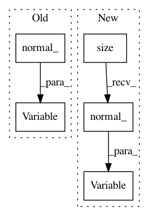

f7a1a77baf9102cbd20971c8edba71c4adad33d6,gpytorch/__init__.py,,monte_carlo_log_likelihood,#Any#Any#Any#Any#Any#,106
Before Change
variational_mean,
chol_var_covar)
else:
epsilon = Variable(train_covar.data.new(len(train_covar), num_trace_samples).normal_())
samples = chol_var_covar.t().mm(epsilon)
samples = samples + variational_mean.unsqueeze(1)
log_likelihood = log_probability_func(samples, train_y)
After Change
Args:
- covar (matrix nxn) - Variable or LazyVariable representing the covariance matrix of the observations.
Usually, this is K + s*I, where s is the noise variance, and K is the prior covariance.
- target (vector n) - Training label vector.
Returns:
- scalar - The marginal log likelihood of the data.
In pattern: SUPERPATTERN
Frequency: 3
Non-data size: 5
Instances
Project Name: cornellius-gp/gpytorch
Commit Name: f7a1a77baf9102cbd20971c8edba71c4adad33d6
Time: 2017-11-05
Author: gpleiss@gmail.com
File Name: gpytorch/__init__.py
Class Name:
Method Name: monte_carlo_log_likelihood
Project Name: OpenNMT/OpenNMT-py
Commit Name: 48a4b5113d1ecdae0319a297250f2273ea73de2d
Time: 2017-01-19
Author: adam.paszke@gmail.com
File Name: vae/main.py
Class Name: VAE
Method Name: reparametrize